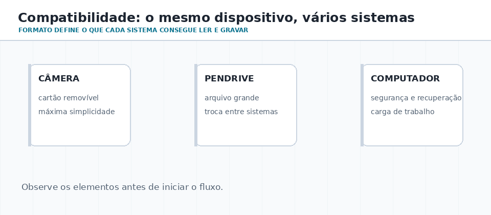
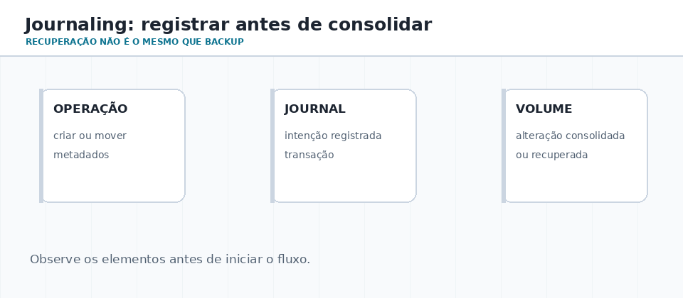
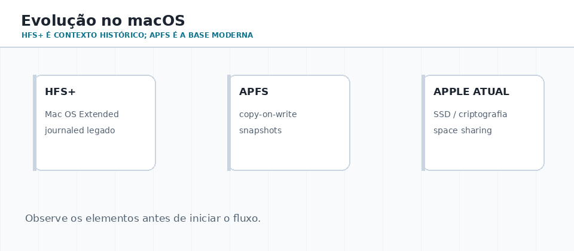

Dois registros diferentes
Journal de recuperação e USN Change Journal não são sinônimos. O segundo registra mudanças e é útil para auditoria e indexação.
AULA 06 · APROX. 60–70 MINUTOS
Compatibilidade não é apenas conseguir abrir um arquivo. Ela envolve tamanho, recuperação após falhas, permissões, criptografia, desempenho e a expectativa de cada sistema operacional.
01 · DECISÃO TÉCNICA
Uma equipe precisa transportar vídeos de 12 GiB entre Windows e macOS, manter dados de servidor Linux consistentes após falhas e controlar o acesso a documentos corporativos. Usar um único formato para tudo seria uma escolha ruim.
comparar formatos, distinguir EFS de sistema de arquivos, explicar journaling, reconhecer HFS+/APFS e justificar escolhas a partir de compatibilidade e risco.

02 · FORMATOS E CAMADAS
| Formato | Uso típico | Força | Limite |
|---|---|---|---|
| FAT32 | firmware, câmera, mídia legada | compatibilidade ampla | arquivo de até 4 GiB; sem journal e ACL NTFS |
| exFAT | pendrive e SSD externo moderno | arquivos grandes entre Windows e macOS | não oferece o modelo de segurança/journal do NTFS |
| NTFS | Windows interno e servidores | ACL, quotas, metadados e recursos de segurança | não é formato de troca universal |
| ext4/XFS | Linux e servidores | semântica POSIX e journal | portabilidade limitada em Windows/macOS |
| APFS | macOS e SSD Apple | criptografia, snapshots e space sharing | não é mídia de intercâmbio |
EFS é criptografia por arquivo/diretório em volume NTFS; não é concorrente de FAT32, NTFS, ext4 ou APFS.
03 · INTERAÇÃO
04 · JOURNALING E RECUPERAÇÃO
A alteração é registrada como transação antes da consolidação final. Depois de uma falha, o sistema pode reaplicar operações concluídas ou descartar as incompletas. Isso reduz inconsistência estrutural, mas não elimina a necessidade de backup.

Journal de recuperação e USN Change Journal não são sinônimos. O segundo registra mudanças e é útil para auditoria e indexação.
Journaling protege a estrutura; dados recentes ainda dependem do modo de gravação e da aplicação.
Adicionam modelos modernos de metadados copiados na gravação, checksums e snapshots em seus ecossistemas.
05 · MACOS
HFS+ também aparece como Mac OS Extended e ainda pode surgir em discos antigos. APFS foi concebido para SSD, criptografia, snapshots, clonagem e compartilhamento de espaço.

06 · LABORATÓRIO SEGURO
Get-Volume
fsutil fsinfo volumeinfo C:
Get-Acl "$env:USERPROFILE\Documents"
df -T
findmnt -T ~
lsblk -f
stat -f -c %T .
07 · DESAFIO FINAL
Escolha um formato e justifique para: cartão de câmera; SSD com vídeos de 12 GiB; estação Windows com grupos; servidor Linux; Mac com SSD atual. Em cada caso, informe onde compatibilidade, journal, ACL e criptografia são relevantes.
Referências: Microsoft Learn (NTFS/EFS), Linux Kernel Documentation (ext4/JBD2) e Apple Platform Security (APFS).